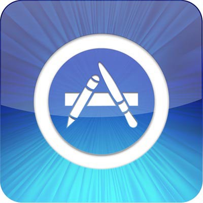
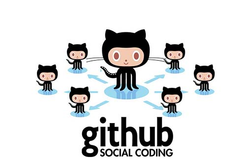

Want to get a piece of the mobile development pie and experience the hottest and coolest technology?Kid, you've got good taste.
There's no doubt that mobile development will be booming now and for the next few years. Countless developer positions are waiting to be filled. Companies everywhere are looking for programmers at all levels — novice, entry-level, intermediate, veteran, and expert.This article is written for beginners — I'll help you find your first iOS development job.
"Why should I listen to you?"
You might say that. Fair question —If it's a newbie giving random advice, then it's best not to listen.
I'm not some great master, nor even aparticularlyexperienced iOS developer — but I know the market well enough to be of some help to you.
I started out as an independent developer with a few apps that didn't bring in much income (but enough to keep me fed and focused on development). Later, I joined a company as a junior iOS developer and could finally devote myself fully to making apps without worrying about what I'd eat tomorrow. If I wanted, I could easily get a job at a company and live comfortably (but that might not suit me — I have entrepreneurship in my blood).
Now, less talk and more action —How can you become an iOS developer?
1. Buy a Mac (and if you don't have an iPhone, you may have to sell a kidney).
iOS development requires a Mac.
Well, you can actually settle for less (like a Hackintosh, or Mac in the Cloud), but take my earnest advice —For an iOS developer, the Mac will be your primary weapon.In general, you don't need to bleed yourself dry to buy the newest, fastest, or most expensive device, but you should at least have something calledMacsomething. Of course, if you're a bit of a rich kid and want a nicer entry-level device, why notconsider a Mac Mini— it's probably the best value for money. If you're like me and value portability, then buyAir— especially the large-screen version. We don't necessarily have to buy new; picking up a used one from eBay is great too.
2. Install Xcode.
Now, when you have your shiny brand-new (or a good used one that's almost as good) Mac, the next step is to install Xcode, the most important software for iOS developers. Xcode is the IDE (Integrated Development Environment) for developing iOS apps. It's free, and you candownload it directly from the Mac App Store. Go download it now, don't dawdle!
In Xcode, you'll write code, edit, "draw" your app in storyboards, run unit tests, and so on. You'll also use Xcode to upload apps to the App Store. You need to become as familiar with it as possible, because it's the most important software for every iOS developer.
3. Learn programming fundamentals (this is probably the hardest part).

Now we've probably reached the hardest step —You need to start programming right away.If you have some programming background, you can choose between Objective-C (harder) and Swift (easier), and it's not that agonizing — they're basically standard object-oriented programming languages. But if you haven't written a single line of code, don't panic —Here are two great resources for complete beginners:
Ry's Objective-C tutorial?— for Objective-C fans who love the "old ways." You don't need to master Objective-C deeply (Swift is the future trend <or already the current trend>), but it's best to understand its basics and be able to read code written in it.
Swift language guide, provided officially by Apple — this is the best Swift reference and learning material. If Apple makes it, it's bound to be excellent.
Of course, you don't need to understand everything deeply —leave that until you're more experienced.But you must have a solid understanding of concepts like variables, pointers, classes, data types, and loops. That way, your future learning will follow naturally.
4. Follow tutorials and imitate them

From this step on, you'll finally be making something useful. Check out these websites:
AppCoda— probably the best starting point for beginners. You can find a huge number of different tutorials, all with very detailed instructions. Be sure to go through them all!
Ray Wenderlich— another useful website with a massive database of iOS development tutorials. Learn from it step by step.
But don't limit yourself to these websites and tutorials! Keep moving forward — build a calculator app. Then a weather app. Then a currency converter app. A music app. See the pattern?As long as you can find tutorials for them, build them all.
Keep following tutorials and building apps until you feel comfortable with both Xcode and the programming language you chose (Objective-C or Swift). Then we move on —
5. Start developing your own app
OK, we're getting into the groove now.Now, you'll start developing your own app, which will become your secret weapon for future interviews.
Don't be afraid! It's not like you're being asked to build Facebook. We're starting from junior positions, right? In a junior position, you can learn a lot from your colleagues. Aiming too high won't help; you can't suddenly become an expert with five years of experience.
So, stay calm and think about which area of iOS development you're currently best at.
Maybe you've built a networking-related app? Maybe you've studied UIKit and are great at complex user interfaces? Or maybe you've built a music player app and love iOS audio? You need to use your interests and knowledge as the foundation for developing your app. Write clean,stylish, well-running code.
6. During this time, I hope you can also learn as much as possible about software development in general.

The fact that you're reading this article somewhat suggests you don't plan to study computer science at university anytime soon. Good news! You don't need to at all!
You can turn on your computer at home and learn a lot from courses in computer science, programming, software engineering, and the like.
Of course, it still can't compare to a degree, but for iOS development specifically, it's more than enough. See the image above? Read the text on it. I won't hand you the links —information searching is one of the most important skills for a developer.Start training. Google is your mentor and friend.
7. Finish the app.
You focus on learning and developing your app, and days, weeks, and months pass... Dude, you should have a decent app of your own by now.Your app is your resume— you must give it your absolute best. Even more, go all out. What will companies hope to see in your app? Here are some suggestions:
A well-runningapp
Clean code
Code structure — small classes, appropriate variable naming, good file grouping in Xcode, and so on
Use of storyboards (if you can build UI both with storyboards and programmatically by hand, that's awesome)
Use of CocoaPods
Some simple unit tests
Use of third-party libraries (for example, some open-source projects on GitHub — this will be a big plus, because it's very useful in real work)
Of course, it all depends on what kind of job and company you're looking for, but in general,master the above and you'll be ready to take on the world。
OK, now you have your awesome, cool app. Next step —
8. Publish the app on the App Store

Uh, let me make this clear —This step isn't strictly necessary, because it requires a developer account, and that account costs $99 a year, which could very likely leave you out of pocket.
To publish or not to publish — that is the question... It's up to you. However, if you can successfully publish, many companies will see it as a big plus.
Having your own app on the App Store means you're familiar with the app release process, familiar with Apple's restrictions on apps (and there are quite a few), and familiar with everything needed beyond the app itself (like app description, keywords, screenshots, promo videos, and so on).
You can choose to skip this step, but I strongly recommend giving it a try (my first job was probably secured thanks to my apps on the App Store).
9. Upload the app to GitHub.

GitHubis a social platform whose main function is source code sharing (another similar but less popular platform is,Bitbucket）。
You can upload your source code here (set to public or private), browse other people's code, and contribute to open-source projects. GitHub is widely used; even if you've always been an independent developer, you can benefit greatly from it —you can organize your code better and get possibly the best backup.
But why should you upload your app? Simple —show the source code to your interviewer.
Stop sending code via email. Get with the times — it's not the 90s.
10. Contact the companies you like!

It's time to make your dream come true —Now, you are ready to take on your first iOS development job!It might start as an intern or junior position, and that doesn't matter—What matters is that you are now capable of finding your first job., all beginnings are hard, but things will go smoothly afterward.
So, prepare your resume, find the company you aspire to, and build apps with them!
Source: http://www.cocoachina.com/ios/20150617/12165.html
Click me to share notes
<p style="font-size:14px;">Notes must be an extension of the content of this article!</p><br> <p style="font-size:12px;"><a href="../tougao.html" target="_blank">Article submission, click here</a></p> <p style="font-size:14px;"><a href="./runoob-user-test-intro.html" target="_blank">How to get a registration invitation code</a></p> <h3 class="text-muted"><i class="fa fa-info-circle" aria-hidden="true"></i> You must <a href=".." class="runoob-pop">log in</a> before sharing notes!</h3> <p><a href="./runoob-user-test-intro.html" target="_blank">How to get a registration invitation code</a></p>